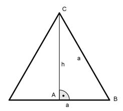

Aufgabe 93 Ein Trapez mit einer Mittellinie von 6 cm und einer Höhe von 4 cm soll einem gleichseitigen Dreieck flächengleich sein. Berechnen Sie die Länge a einer Dreieckseite und das Verhältnis der beiden Höhen.  ATrapez = m * h = 6 cm * 4 cm = 24 cm2 Satz von Pythagoras im Dreieck ABC: a a2 a2 = h2 + (---)2 | - ---- 2 4 a2 a2 - ---- = h2 4 3 * a2 h2 = -------- |√ 4 a h = --- * √3 2 a --- a * h a * 2 * √3 a2 * √3 ADreieck = ------- = -------------- = --------- 2 2 4 Wegen ADreieck = ATrapez a2 * √3 24 = --------- |*4 4 96 = a2 * √3 cm2 |:√3 96 a2 = ---- cm2 |√ √3 a = 7,4 cm 7,4 cm h = -------- * √3 2 h = 6,4 cm hT 4 cm --- = --------- = 0,6 hD 6,4 cm